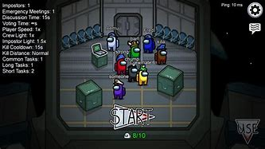
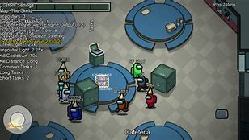
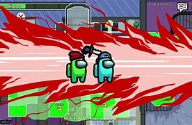
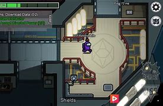

AmonguS
Gracze dzielą się na członków załogi (ang. crewmates) oraz od jednego do trzech oszustów (ang. impostors). Rolą członków załogi jest wykonywanie zadań na statku, a oszustów – sabotowanie misji i eliminowanie członków załogi. Gracze na początku rozgrywki otrzymują informację, ilu antagonistów jest na statku. Są oni eliminowani poprzez demokratyczne głosowania, podczas których członkowie załogi konsultują się i na podstawie swoich obserwacji wyłaniają podejrzanych. Osoby, które uzyskały najwięcej głosów, giną. Gdy wszyscy oszuści zostaną zlikwidowani lub gdy członkowie wykonają wszystkie zadania, wygrywa załoga. Gdy oszuści wyeliminują dużą część załogi lub zniszczą ważne części statku, wygrywają.
Strona Amongus na Google Play 